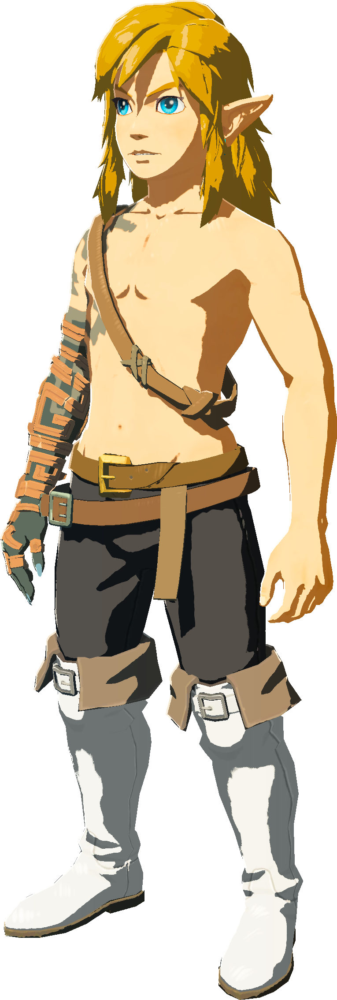
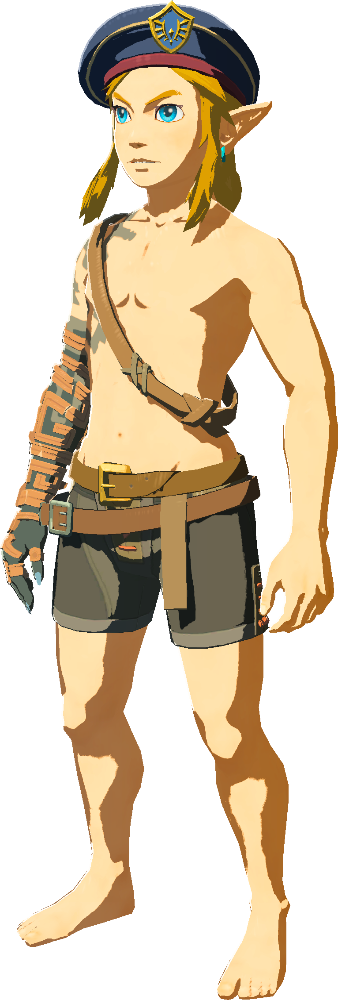

图：游戏内模型图——林克穿上近卫兵的衣服：蓝底金纹、胸前三角神力纹，配红绶带与白手套，是海拉鲁王室近卫的制服（图片来源：Zelda Wiki）。
先说结论：0 卢比白嫖，防御 4 起步，升满 24
近卫套装是《王国之泪》里性价比最离谱的一套衣服：三件——近卫兵的帽子、近卫兵的衣服、近卫兵的靴子——全在海拉鲁城堡里的宝箱里，开箱就是你的，不用花一卢比，不用接任务，不用打任何 Boss。拿到滑翔伞就能去拿，每件基础防御 4，比开局花 320 卢比买的海利亚套装（每件 3）还硬一截；三件都升到两星再一起穿上，套装加成“蓄力攻击省精力”生效，蓄力攻击耗的精力变少，大剑旋转蓄力能多转几圈；升满四星每件防御 24，三件一共 72。代价也一句话能说完：它不能染色，强化要刷首领波克布林、希诺克斯、莫尔德拉吉克和古栗欧克的素材，四星那一级尤其费工夫。先把结论说清楚：只想要一套开局就能穿的高防御衣服，去城堡拿它准没错；想把它当主力升满，先看你是不是大剑蓄力流的打法，不是的话升到两星拿加成就够了。
适合谁：三类玩家最值得跑这一趟
第一类是刚下初始空岛、手头没几件衣服的玩家：海利亚套装要 320 卢比，士兵套装要钻国王密道，近卫套装只要你会滑翔就能白嫖，防御 4 起步是开局能拿到的最高一档。第二类是大剑蓄力流的玩家：双手剑的旋转蓄力最吃精力，这套是全游戏唯一靠衣服减蓄力消耗的套装，配一把高攻击余料的大剑，蓄力转圈的伤害和续航都上一个台阶。第三类是套装收集玩家：这套在上一作《荒野之息》里是付费 DLC 的内容，到了《王国之泪》直接放进城堡让你捡，收藏价值和来头都不小。反过来，如果你只用单手剑和弓、从来不蓄力，这套对你就只有防御数值有用，拿齐收藏即可，不用急着升满。
前置准备：滑翔伞、精力与向阳草料理
拿这套没有硬性的任务前置，但有四样东西备齐了再去，城堡之行会顺得多。第一是滑翔伞：海拉鲁城堡浮在空中，离地很高，从瞭望台鸟望塔弹射、滑翔往东北飞是最顺的进城路线，没有滑翔伞根本上不去。第二是精力：城堡里要爬墙、滑翔、过断桥，至少攒一圈半精力再去，带几份精力料理更稳。第三是向阳草料理：城堡周身布满瘴气，踩上去会暂时扣掉红心上限，吃一份向阳草做的料理能把扣掉的红心补回来，带两三份防身。第四是弓箭和炸弹花：城堡里有霍拉布林和瘴气之手，远程点掉比贴身打安全得多；瘴气之手尤其别贴身，远远绕开或者弓箭点掉就行。究极手和通天术是初始空岛就有的能力，拿三件都用得上，不用额外解锁。提醒一句：不用等打完神殿再来，城堡随时能进，神庙和鸟望塔先开好，死了也能就近复活再进。
三件分别在哪：帽子、衣服、靴子总表
三件散在城堡的三个角落，彼此不顺路，别想一次逛完。帽子在城堡中部的塞尔达的房间，衣服在西边第一门楼之下的卫兵休息室，靴子在东北边图书馆里的国王书房。位置总表如下：
| 部件 | 地点 | 宝箱坐标（约） | 最近传送点 |
|---|---|---|---|
| 近卫兵的帽子 | 塞尔达的房间 | （-0332，1006，0301） | 塞鲁塔博麦神庙 |
| 近卫兵的衣服 | 卫兵休息室 | （-0411，0853，0076） | 第一门楼、瞭望台鸟望塔 |
| 近卫兵的靴子 | 国王书房（图书馆内） | （-0175，1123，0215） | 塞鲁塔博麦神庙 |
坐标要说明一句：不同攻略站给的数字末尾差一两格，帽子有写（-0331，1005，0300）的，衣服有写（-0409，0853，0075）的，靴子有写（-0174，1122，0214）的，都是同一只宝箱的不同读数，认地点和地标比认死数字管用。塞鲁塔博麦神庙在城堡东北侧，坐标（-0179，1170，0280），是三件里两件的落脚点，先开它再动手。

图：游戏内模型图——近卫兵的靴子：白色及膝长靴配棕色靴口，是三件里最容易拿的一件（图片来源：Zelda Wiki）。
靴子：国王书房，拉开图书馆的书架
靴子：城堡图书馆里的国王书房。这是三件里最容易拿的一件，哈里建议先拿它开张。从塞鲁塔博麦神庙传过来，神庙正下方就是图书馆的入口：进门下楼梯，走到阳台边跳进图书馆底层，转身对着楼梯下的书架——其中一排书架颜色和其他的不一样，用究极手把它拉开，暗门后面就是国王书房。宝箱就在书房里，开箱拿靴子；书房里还放着一面盾，顺手一起拿上。提醒两点：第一，进图书馆不用打怪，霍拉布林都在外头，书房里很安静；第二，拉书架要用究极手直接抓，推是推不动的，抓住了往外拉，暗门就开了。拿了靴子别急着走，图书馆本身就是城堡里最值得逛的地方之一，顺手把周围的宝箱和素材认一认再走。
帽子：塞尔达的房间，屏风后面的宝箱
帽子：塞尔达的房间。最顺的路线是从塞鲁塔博麦神庙向西走，穿过霍拉布林住的洞穴，走到尽头用通天术上去，再跳进房间中间的洞，落下来就是塞尔达的房间。进房间往左看，西北角有一副屏风，宝箱就藏在屏风后面，开箱拿帽子。另一条路是从圣所走：进圣所正门后从西墙的窗户翻出去，塞尔达的房间就在窗外下方的阳台上；但要提醒一句，圣所深处有幻影加侬，只贴着西墙走、别往王座方向深入，拿了帽子就走，不要恋战。对面塔上是塞尔达的书房，里面有一把近卫之剑，但中间那座石桥一踩就塌，想过去拿剑就得另找落脚点，别贪一把剑把自己摔下去。帽子是三件里路程最绕的一件，霍拉布林洞穴里光线暗，带一颗亮光花种子或者穿一件发光的衣服更稳。

图：游戏内模型图——近卫兵的帽子：深蓝贝雷帽配金色徽章，是整套最有辨识度的一件（图片来源：Zelda Wiki）。
衣服：卫兵休息室，木板搭桥过瘴气水洼
衣服：第一门楼之下的卫兵休息室。这是三件里最费事的一件，因为宝箱在瘴气水洼上方。先到第一门楼，坐标（-0375，0845，0109），从门楼西南侧的入口进去，用究极手拉开两道闸门往里走，上楼梯后左转、再左转下楼梯，就进了卫兵休息室。走到楼梯底下，抬头就能看到宝箱在一座木台上，木台下面是一大摊瘴气水洼。过去的办法有两个：用究极手把旁边的两块木板搭成桥走过去，或者站在瘴气边缘用通天术直接升到木台上——后者更快，但站位要找准，踩进瘴气里会扣红心上限，别贪快掉进去。拿到衣服之后别原路返回：这条路连着国王密道，顺着密道往瞭望台方向走，能一路拿到士兵套装三件和钻石，是一趟很赚的顺路。反过来也可以从国王密道那头进来：从瞭望台紧急避难所进密道走到头，再爬进城堡拿衣服，顺路把士兵套装一起收了。
套装效果：单件没效果，三件两星才解锁蓄力省精力
近卫套装的效果机制要先讲清楚，免得穿上就失望：单件穿上时没有任何特殊效果，只有防御数值。三件都升到两星、再一起穿上，套装加成“蓄力攻击省精力”才生效，蓄力攻击耗的精力变少。注意三个细节。第一，解锁条件是“三件都到两星”，只升一件、只穿两件，或者三件里有一件没到两星，都不触发；开两座大妖精之泉才能升到两星，先把泉开了再谈加成。第二，这个加成只减蓄力攻击的精力消耗：双手剑的旋转蓄力最受益，蓄力能多转几圈；单手剑的蓄力劈砍和弓的蓄力射击也省，但省得没那么明显。第三，别被上一作的记忆带偏：《荒野之息》里这套还有游泳冲刺、攀爬跳跃省精力的隐藏效果，到了《王国之泪》里已经修正为只减蓄力攻击消耗，游泳和攀爬是不省的，别指望穿它游得更远。哈里多说一句：蓄力省精力不是攻击提升，伤害一分不加，它省的是你的精力条——打法上适合喜欢蓄力转圈的大剑玩家，不适合只看伤害数字的玩家。
强化表：每件 4 到 24 防御，三件满级 72
近卫套装每件初始防御 4，升满四星到 24，三件满级一共 72 防御。强化要找大妖精：开一座泉升一星，开两座升两星（套装加成在这里解锁），开三座升三星，开四座升四星。三件的强化材料完全一样，单件材料表如下：
| 等级 | 防御 | 材料（每件） | 卢比 |
|---|---|---|---|
| 初始 | 4 | — | — |
| ★ | 6 | 3×首领波克布林的角、3×波克布林的内脏 | 10 |
| ★★ | 10 | 3×蓝色首领波克布林的角、3×首领波克布林的内脏 | 50 |
| ★★★ | 15 | 3×黑色首领波克布林的角、3×希诺克斯的内脏 | 200 |
| ★★★★ | 24 | 3×银色首领波克布林的角、3×莫尔德拉吉克的内脏、3×古栗欧克的内脏 | 500 |
三件全满级一共要：首领波克布林的角 9 个、波克布林的内脏 9 个、蓝色首领波克布林的角 9 个、首领波克布林的内脏 9 个、黑色首领波克布林的角 9 个、希诺克斯的内脏 9 个、银色首领波克布林的角 9 个、莫尔德拉吉克的内脏 9 个、古栗欧克的内脏 9 个、2280 卢比。升星的节奏建议：先把三件都升到两星，套装加成到手立刻停手——两星的材料只要首领波克布林的角和内脏加波克布林的内脏，相对好凑；三星、四星要希诺克斯、莫尔德拉吉克和古栗欧克的内脏，等装备成型了再补。有个有意思的巧合：士兵套装和海利亚套装升满也是 2280 卢比，三套的卢比总价一模一样，差的是材料难易。提醒一句：这套不能染色，喜欢换颜色的玩家别在这套上花心思。
强化材料从哪刷：首领波克布林、希诺克斯与古栗欧克
强化材料分四类，各有固定来源。首领波克布林的角和内脏：首领波克布林是各地波克布林营地里的大个子首领，角按颜色分档——红色、蓝色、黑色、银色，营地里首领的颜色会随着游戏进度变强，前期只能刷到红色和蓝色，黑色和银色要等流程推进、敌人整体变强之后才出现；内脏是打首领掉的，掉率不算高，刷的时候顺手把营地里的宝箱也开了。波克布林的内脏：普通波克布林也掉，营地里一抓一大把，一星的材料刷一圈营地就够了。希诺克斯的内脏：希诺克斯是海拉鲁各地的大块头独眼巨人，弓箭射眼睛、等它捂眼倒下再上去砍，效率最高；血月之后会刷新，缺内脏就按图索骥多打几只。莫尔德拉吉克和古栗欧克的内脏：这两样是四星的门槛，莫尔德拉吉克在格鲁德沙漠里钻沙，古栗欧克在各地天空和地面出没，打法和位置见本站的莫尔德拉吉克完全指南与古栗欧克完全指南；古栗欧克的内脏尤其要留意，9 个不是小数目，别拖到最后才发现一只都没打过。
和士兵、海利亚比：三套开局装谁先穿
开局能拿到的高防御衣服就这三套，定位各不相同，选哪套要看你手里有什么、打什么流派。数值总表如下：
| 套装 | 基础防御（每件） | 满级防御（每件 / 三件） | 套装加成 | 拿法 | 满级卢比 |
|---|---|---|---|---|---|
| 近卫套装 | 4 | 24 / 72 | 蓄力攻击省精力（两星解锁） | 海拉鲁城堡三只宝箱，免费 | 2280 |
| 士兵套装 | 4 | 28 / 84 | 无 | 国王密道三只宝箱，免费 | 2280 |
| 海利亚套装 | 3 | 20 / 60 | 无 | 瞭望台防具店 320 卢比买齐 | 2280 |
哈里的判断：开局先穿近卫或者海利亚，二选一就行——近卫 0 卢比、防御 4 起步，适合刚下空岛就想直接进城堡的玩家；海利亚 320 卢比立刻成型，适合不想跑城堡、想先稳稳开荒的玩家。士兵套装是防御上限最高的衣服，满级 84 是全游戏第一档，但它没有套装加成，强化还要人马的蹄子和内脏，成本最高，适合后期堆防御的玩家。近卫套装夹在中间：防御上限不如士兵，但多了蓄力省精力，大剑玩家穿它比穿士兵划算；单手剑和弓玩家穿士兵更实在。还有一条混搭的路：三件都升到两星之后，一件近卫配两件士兵，照样触发不了套装加成——加成要三件全是近卫才行，别混搭了还指望省精力；反过来，只想堆防御的话，三件士兵就是答案。
回购与丢失：卖了再买回来要多少钱
近卫套装的三件都能买回来，但价格不便宜，卖之前先想清楚。近卫兵的衣服最便宜：完成哈特诺村的村长选举情节挑战之后，村里的服饰店会上架这件衣服，2200 卢比。近卫兵的帽子和近卫兵的靴子不在店里卖，要找服饰店的店主本人私下购买，各 4000 卢比。也就是说，三件全卖了再买回来要 10200 卢比，比当初白嫖的 0 卢比贵得多。卖价本身也不高：帽子和靴子各卖 600 卢比，衣服卖 550 卢比，升满四星之后帽子和靴子能卖 1450 卢比、衣服 1400 卢比——就算升满了卖，也远不够买回来的价。哈里的建议就一句：别卖。缺卢比先卖矿石和多余的怪物材料，别动这套；万一手滑卖了，帽子和靴子各 4000 卢比的回购价就是教训。
翻车点：八件容易翻车的事
- 没带滑翔伞就往城堡飞：城堡浮在空中，没有滑翔伞根本上不去，先去瞭望台拿滑翔伞再来。
- 踩进卫兵休息室的瘴气水洼：宝箱在水洼上方的木台上，木板搭桥或者通天术上去，别直接踩进去，扣掉的红心上限要向阳草料理才能补。
- 在圣所里往王座方向深入：圣所深处有幻影加侬，从圣所走只贴着西墙、拿了帽子就走，别进去打，开局的装备打它很吃力。
- 去塞尔达的书房踩那座石桥：桥一踩就塌，想拿书房里的近卫之剑就另找落脚点，别贪一把剑摔下去。
- 以为单件穿上就有效果：单件只有防御数值，套装加成要三件都升到两星、一起穿上才触发，只升一件是没用的。
- 以为这套能染色：近卫套装不能染色，喜欢换颜色的玩家别在这套上花心思，也别指望染色店能接这单。
- 手头紧把近卫套装卖了：帽子和靴子买回来各要 4000 卢比，衣服 2200 卢比，卖价才几百，缺钱先卖矿石别卖这套。
- 拖到最后才发现没打过古栗欧克：四星要 9 个古栗欧克的内脏，平时路过古栗欧克就打一只攒着，别等升四星了才从零开始。
哈里的取舍：先拿靴子，大剑玩家才升满
三件里先拿哪件？先拿靴子：塞鲁塔博麦神庙传过来就是图书馆门口，拉开书架开箱就走，洞里没有 Boss，拿了立刻就有一件防御 4 的衣服。帽子第二：从神庙向西穿霍拉布林洞穴，通天术上去、跳洞落进塞尔达的房间，屏风后开箱，顺路把神庙也开了。衣服最后：卫兵休息室要过瘴气水洼，等弓箭、精力料理和向阳草料理都备齐了再去，去了先搭桥、再开箱。拿齐之后别急着升满：先把三件都升到两星，套装加成到手立刻停手；三星、四星的材料（希诺克斯、莫尔德拉吉克和古栗欧克的内脏）留到后期富余了再补。最后提醒一句：这套衣服最大的分水岭是你的武器——天天抡大剑蓄力转圈的玩家，升满它值；只用单手剑和弓的玩家，升到两星就够了，剩下的材料留给士兵套装堆防御更实在。
一句话总结
近卫套装是王国之泪里最划算的开局衣服：三件全在海拉鲁城堡的宝箱里，0 卢比白嫖，每件防御 4，升满 24，三件升到两星解锁蓄力省精力——大剑玩家拿了就别放下，单手剑玩家升到两星也够用了。
- › 海拉鲁无脑砍王！《王国之泪》无可争议的日常终极神器——七宝匕首
- › 最值得合成的料理——四大神级配方与食材批发攻略
- › 《王国之泪》最强套装与隐藏特效全解析——三梯队完全推荐
- › 乌萨诸马神庙（Usazum Shrine）零基础包教包会攻略
- › 白龙寻踪与大师之剑（驱魔之剑）永久拔剑全攻略
- › 神级逃课神器——"马克兔"（Hover Bike）极致调校与蓝图指南
- › 地底矿坑探索、左纳乌电池16节全满扩充与大妖精防具强化指南
- › 152座神庙全收集自查指南：怎么找出你少的那一座
- › 新手开荒指南：落地先做的10件事
- › 呀哈哈种子全指南：1000颗的解谜类型与扩充路线
- › 地底世界生存与探索完全指南
- › 大妖精四姐妹与防具强化完全指南
- › 四条龙素材刷取指南
- › 人马（莱尼尔）完全指南
- › 卢比速刷指南：从前期到后期
- › 马匹捕捉与稀有马完全指南
- › 五位贤者能力全解
- › 料理机制全解：效果、时长与暴击
- › 海拉鲁城堡探索完全指南
- › 海拉鲁图鉴509项收集指南
- › 左纳乌装置实用造物指南
- › 血月机制全解
- › 余料建造完全指南
- › 祝福之光兑换完全指南
- › 15座鸟望塔开图完全指南
- › 弓箭完全指南：选弓、箭矢搭配与五连兽神弓
- › 洞窟探险完全指南：樱花树、魔犹伊与柯尔天
- › 盾牌完全指南：海利亚盾、盾反与盾冲浪
- › 天空岛完全指南：上岛四法、贤者遗志与残旧地图
- › amiibo完全指南：每天一次的免费奖励与布料收藏
- › 瘴气恢复完全指南：破损的心、向阳草与瘴气抗性
- › 龙之泪完全指南：11幅地上绘与第12滴泪的位置
- › 极端环境生存完全指南：防寒、防热、防火与雷暴
- › 初始空岛四种能力与自动建造实战指南
- › 钻石与矿石采集完全指南：稀有矿脉、岩石巨人、咚咚与拉梅拉
- › 依盖队潜入完全指南：三件套、据点与剑士考试
- › 左纳乌能源结晶速刷完全指南：电池扩容与地底路线
- › 风之神殿完全指南：五座风车机关与冰封三头龙
- › 水之神殿完全指南：四座水阀与污泥魔像
- › 火之神殿完全指南：五座锣与大理石魔像
- › 雷之神殿完全指南：四座蓄电池与吉波多女王
- › 滑翔伞完全指南：飞得更远、更稳、更省精力
- › 塞尔达的金马完全指南：雪原驿站接任务、北雪原抓马
- › 星星碎片完全指南：夜里追流星、103 颗强化清单
- › 完美闪避与盾反完全指南：林克时间、盾反时机与神庙练法
- › 迷雾森林完全指南：地底绕路进克洛格森林、治愈德库树
- › 潜行完全指南：偷袭 8 倍伤害、潜行套装与烟雾菇连招
- › 古代勇者套装完全指南：152 神庙通关奖励、时之神殿宝箱与强化材料
- › 柯尔天商店完全指南：魔犹伊的遗失物兑换表、5 张怪物面罩与精灵套
- › 莫尔德拉吉克完全指南：四处位置坐标、诱饵炸弹打法与掉落全解
- › 古栗欧克完全指南：四种打法、位置坐标与掉落全解
- › 方块魔像完全指南：三种打法、位置坐标与核心余料全解
- › 一始村完全指南：建房、任务与商店全解
- › 攀登套装完全指南：三件位置、强化材料与套装效果全解
- › 卓拉套装完全指南：三件位置、强化材料与逆瀑布全解
- › 蛮族套装完全指南：三件位置、强化材料与攻击提升全解
- › 钓鱼完全指南：电鱼、钓点与 15 种鱼全解
- › 滑翔套装完全指南：三座空岛、俯冲仪式与冲击免疫全解
- › 余烬套装完全指南：三座洞窟、高温攻击与喂狗开箱全解
- › 岩石巨人完全指南：六种巨人打法、矿脉弱点与宝石掉落全解
- › 左纳乌扭蛋机完全指南：全图位置、每台出什么、怎么抽最赚
- › 左纳乌套装完全指南：先上天，再省电
- › 蛙人套装完全指南：下雨天也能往上爬
- › 橡胶套装完全指南：被雷劈也不掉武器
- › 夜光套装完全指南：骷髅把你当自己人
- › 雪地套装完全指南：2150 卢比买齐，风之神殿前先穿两级防寒
- › 沙漠套装完全指南：2400 卢比买齐，白天耐热夜里换防寒
- › 幻影套装完全指南：三件全在地面洞穴，防御8攻击+50%
- › 矿工套装完全指南：三件全在地底宝箱，穿上自带光
- › 海利亚套装完全指南：320 卢比买齐，开局第一套衣服就这么穿
- › 鬼神套装完全指南：三处洞穴拿齐，攻击提升加蓄力省精力
- › 近卫套装完全指南：三件全在海拉鲁城堡，蓄力省精力（本篇）
- › 海拉鲁无脑砍王！《王国之泪》无可争议的日常终极神器——七宝匕首
- › 最值得合成的料理——四大神级配方与食材批发攻略
- › 《王国之泪》最强套装与隐藏特效全解析——三梯队完全推荐
- › 乌萨诸马神庙（Usazum Shrine）零基础包教包会攻略
- › 白龙寻踪与大师之剑（驱魔之剑）永久拔剑全攻略
- › 神级逃课神器——"马克兔"（Hover Bike）极致调校与蓝图指南
- › 地底矿坑探索、左纳乌电池16节全满扩充与大妖精防具强化指南
- › 152座神庙全收集自查指南：怎么找出你少的那一座
- › 新手开荒指南：落地先做的10件事
- › 呀哈哈种子全指南：1000颗的解谜类型与扩充路线
- › 地底世界生存与探索完全指南
- › 大妖精四姐妹与防具强化完全指南
- › 四条龙素材刷取指南
- › 人马（莱尼尔）完全指南
- › 卢比速刷指南：从前期到后期
- › 马匹捕捉与稀有马完全指南
- › 五位贤者能力全解
- › 料理机制全解：效果、时长与暴击
- › 海拉鲁城堡探索完全指南
- › 海拉鲁图鉴509项收集指南
- › 左纳乌装置实用造物指南
- › 血月机制全解
- › 余料建造完全指南
- › 祝福之光兑换完全指南
- › 15座鸟望塔开图完全指南
- › 弓箭完全指南：选弓、箭矢搭配与五连兽神弓
- › 洞窟探险完全指南：樱花树、魔犹伊与柯尔天
- › 盾牌完全指南：海利亚盾、盾反与盾冲浪
- › 天空岛完全指南：上岛四法、贤者遗志与残旧地图
- › amiibo完全指南：每天一次的免费奖励与布料收藏
- › 瘴气恢复完全指南：破损的心、向阳草与瘴气抗性
- › 龙之泪完全指南：11幅地上绘与第12滴泪的位置
- › 极端环境生存完全指南：防寒、防热、防火与雷暴
- › 初始空岛四种能力与自动建造实战指南
- › 钻石与矿石采集完全指南：稀有矿脉、岩石巨人、咚咚与拉梅拉
- › 依盖队潜入完全指南：三件套、据点与剑士考试
- › 左纳乌能源结晶速刷完全指南：电池扩容与地底路线
- › 风之神殿完全指南：五座风车机关与冰封三头龙
- › 水之神殿完全指南：四座水阀与污泥魔像
- › 火之神殿完全指南：五座锣与大理石魔像
- › 雷之神殿完全指南：四座蓄电池与吉波多女王
- › 滑翔伞完全指南：飞得更远、更稳、更省精力
- › 塞尔达的金马完全指南：雪原驿站接任务、北雪原抓马
- › 星星碎片完全指南：夜里追流星、103 颗强化清单
- › 完美闪避与盾反完全指南：林克时间、盾反时机与神庙练法
- › 迷雾森林完全指南：地底绕路进克洛格森林、治愈德库树
- › 潜行完全指南：偷袭 8 倍伤害、潜行套装与烟雾菇连招
- › 古代勇者套装完全指南：152 神庙通关奖励、时之神殿宝箱与强化材料
- › 柯尔天商店完全指南：魔犹伊的遗失物兑换表、5 张怪物面罩与精灵套
- › 莫尔德拉吉克完全指南：四处位置坐标、诱饵炸弹打法与掉落全解
- › 古栗欧克完全指南：四种打法、位置坐标与掉落全解
- › 方块魔像完全指南：三种打法、位置坐标与核心余料全解
- › 一始村完全指南：建房、任务与商店全解
- › 攀登套装完全指南：三件位置、强化材料与套装效果全解
- › 卓拉套装完全指南：三件位置、强化材料与逆瀑布全解
- › 蛮族套装完全指南：三件位置、强化材料与攻击提升全解
- › 钓鱼完全指南：电鱼、钓点与 15 种鱼全解
- › 滑翔套装完全指南：三座空岛、俯冲仪式与冲击免疫全解
- › 余烬套装完全指南：三座洞窟、高温攻击与喂狗开箱全解
- › 岩石巨人完全指南：六种巨人打法、矿脉弱点与宝石掉落全解
- › 左纳乌扭蛋机完全指南：全图位置、每台出什么、怎么抽最赚
- › 左纳乌套装完全指南：先上天，再省电
- › 蛙人套装完全指南：下雨天也能往上爬
- › 橡胶套装完全指南：被雷劈也不掉武器
- › 夜光套装完全指南：骷髅把你当自己人
- › 雪地套装完全指南：2150 卢比买齐，风之神殿前先穿两级防寒
- › 沙漠套装完全指南：2400 卢比买齐，白天耐热夜里换防寒
- › 幻影套装完全指南：三件全在地面洞穴，防御8攻击+50%
- › 矿工套装完全指南：三件全在地底宝箱，穿上自带光
- › 海利亚套装完全指南：320 卢比买齐，开局第一套衣服就这么穿
- › 鬼神套装完全指南：三处洞穴拿齐，攻击提升加蓄力省精力
- › 近卫套装完全指南：三件全在海拉鲁城堡，蓄力省精力（本篇）